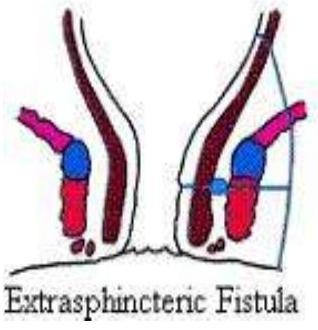
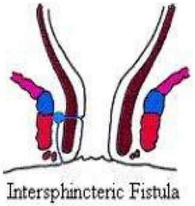
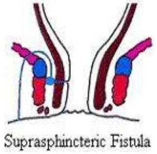
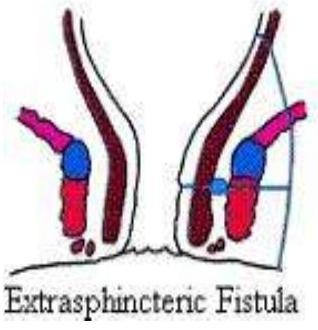
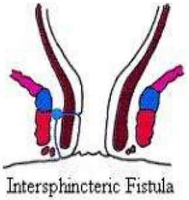
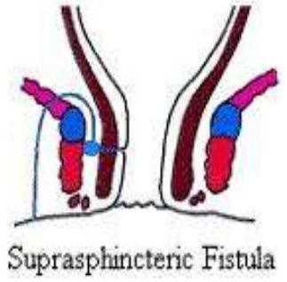

FISTULA-IN-ANO
Definition & Etiology
Definition
An anorectal fistula (Fistula-in-Ano) is an abnormal communication between the anus and the perianal skin. It occurs as a hollow tract lined with granulation tissue connecting a primary opening inside the anal canal to a secondary opening in the perianal skin.
Demographics
- Sex: Male-to-female ratio approx. 2:1
- Age: Mean age is 38 years.
Etiology
Fistula-in-ano is nearly always caused by a previous anorectal abscess. Anal canal glands situated at the dentate line afford a path for infecting organisms to reach the intramuscular spaces.
Other predisposing factors:
- Trauma
- Crohn disease
- Anal fissures
- Anorectal Carcinoma / Radiation therapy
- Infection (actinomycoses, tuberculosis, chlamydia)
- Prolapsed internal hemorrhoid
- Immunosuppression (HIV)
Pathophysiology (Cryptoglandular Hypothesis)
The infection begins in cryptoglandular situated at the dentate line in the anal canal and progresses into the muscular wall of the anal sphincters to cause an anorectal abscess. Following surgical or spontaneous drainage in the perianal skin, occasionally a granulation tissue-lined tract is left behind.
Classification
Parks Classification System
Defines 4 types based on the course relative to sphincter muscles:
- Intersphincteric (70% - Commonest): Via internal sphincter to the intersphincteric space then to perineum. Result from perianal abscesses.
- Transsphincteric (25%): Via internal and external sphincters into the ischiorectal fossa then to perineum. Originate from ischiorectal abscesses.
- Suprasphincteric (5%): Via intersphincteric space superiorly to above puborectalis muscle into ischiorectal fossa then to perineum. Result from supralevator abscesses.
- Extrasphincteric (1%): Bypass the anal canal and sphincter mechanism, passing through ischiorectal fossa and levator ani, opening high in the rectum.
 





Clinical Presentation
History (In order of prevalence)
- Perianal discharge (intermittent or constant)
- Perianal pain (worse during defecation)
- Swelling/lump in the perianal area
- Bleeding
- Diarrhea
- Discoloration of skin
- External opening in the perianal discharging
- Fever
Physical Examination
- Inspection: External opening appearing as open sinus or granulation tissue. Spontaneous discharge.
- DRE: Palpate for fibrous tract/cord. Lateral or posterior induration suggests deep postanal or ischiorectal extension. Assess sphincter tone.
Investigations
- Fistulography: Injection of contrast via internal opening followed by X-rays.
- Endoanal/Endorectal Ultrasound: Helps define muscular anatomy and differentiate intersphincteric from transsphincteric.
- MRI: Study of choice for complex fistulae.
- CT Scan: Better for abscess fluid pockets than small fistula tracts.
- Proctosigmoidoscopy: To rule out associated disease (Crohn's, Carcinoma).
MANAGEMENT
Medical
Broad spectrum antibiotics.
Surgery
1. Fistulotomy (Laying-open)
Useful for 85-95% of primary fistulae (submucosal, intersphincteric, low transsphincteric). The tract is opened, and the wound heals by granulation.
2. Fistulectomy
Similar to above but involves curettage to remove all granulation tissue in the tract base.
3. Seton Placement
Indications: Complex fistulae (high transsphincteric, suprasphincteric), Recurrent fistulae, Anterior fistulae in females, Crohn's disease, Poor sphincter tone.
Mechanism: A suture/rubber band passed through the tract. Tightened over time to induce fibrosis and cut through the sphincter slowly (prevents incontinence) or to drain infection.
4. Complex Cases
May require colostomy or Posterior Sagittal Anorectoplasty (PSARP).
Post-operative Care
- Sitz baths, analgesics, stool bulking agents.
- Internal wound should not close prematurely (risk of recurrence).
- Healing usually within 6 weeks.
Complications
Early postoperative
- Urinary retention
- Bleeding
- Fecal impaction
- Thrombosed hemorrhoids
Delayed postoperative
- Recurrence
- Incontinence (stool)
- Anal stenosis
- Delayed wound healing (> 12 weeks)